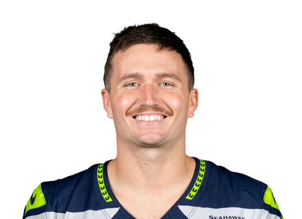

Week 1 · Opening analysis · Friday, September 11, 2026
Seahawks 13, Patriots 10. 49ers 27, Rams 7. Most of Week 1 is still ahead.
Sam Darnold left Wednesday's Super Bowl rematch with a hip injury after a first-quarter sack and is expected to miss Week 2 at Arizona. A.J. Brown sustained a right high-ankle sprain in the third quarter and is anticipated to miss multiple weeks. On Thursday in Melbourne, Brock Purdy threw three touchdowns as San Francisco beat Los Angeles 27-7. De'Zhaun Stribling left with a non-contact ankle injury. Jake Tonges sustained an MCL sprain.
Wed, Sep 9 · 8:20 p.m. ET · NBC
Seahawks 13, Patriots 10
Thu, Sep 10 · Netflix · Melbourne, Australia
49ers 27, Rams 7





Maye, Darnold, Lock, Brown, Smith-Njigba, Purdy, McCaffrey, Nacua. The first two nights already changed Sunday lineups and the Week 2 waiver list.
Week 1 opened on two continents before most of the league had taken a snap. The Patriots went to Seattle on Wednesday and lost 13-10. The 49ers and Rams then played in Melbourne, and San Francisco left Australia with a 27-7 win. Those scores already sit in Week 1 totals. They also open holes for the Sunday remainder and set the first waiver list of the year.
Wednesday in Seattle
Sam Darnold lasted one series. He left in the first quarter after a sack, went to the locker room, and was ruled out before halftime with a hip injury. A CT scan ruled out a fracture. Coach Mike Macdonald said Thursday that the early news was "really, really good," and that Darnold is still expected to miss next week at Arizona. Tom Pelissero reported Drew Lock as the likely Week 2 starter against the Cardinals.
New England led 7-0 at the break. Lock finished the comeback. Seattle's defense closed the night with a late interception. Drake Maye threw three fourth-quarter interceptions and called the mistakes unacceptable after the game.
A.J. Brown sustained a right high-ankle sprain in the third quarter. He left in a walking boot. X-rays were negative. Ian Rapoport and Mike Garafolo reported the sprain, and early reporting pointed to about three to four weeks. New England avoided a fracture. Brown is still anticipated to miss multiple weeks, including the Sunday remainder.
Jaxon Smith-Njigba still produced after Lock entered. If you rostered him, you already have his Week 1 line. Keep him in for Week 2 even if Lock starts. Waiver names that moved on the wire: Romeo Doubs and DeMario Douglas. If Brown sits multiple weeks, add Douglas first among New England receivers. Rooms that need a replacement wideout this weekend will reach for Doubs. Leave Jadarian Price on the wire until he actually plays a real snap share.
Fantasy notes from Seattle
- Stream Lock in Week 2 against Arizona if you need a quarterback. Bench Darnold until the MRI and the Week 2 designation land.
- Hold Smith-Njigba. He already worked with Lock in the opener.
- Maye's Week 1 score is in. Do not drop him. For Week 2, start him only if you lack a cleaner Sunday option.
- Stash Brown or move him to IR if your league allows it. Fade him while he recovers from the high-ankle sprain, at least the next three weeks.
- Seattle's defense already scored. It remains a Week 2 stream if you like the Arizona matchup.
- Friday waiver tickets: Douglas if Brown is out, Doubs if you need a wideout, Lock if your quarterback just went down.
Thursday in Melbourne
The first regular-season NFL game on Australian soil went to San Francisco, 27-7. Brock Purdy completed 25 of 34 for 205 yards, three touchdowns, and one interception. Matthew Stafford and the Rams never found a second half. Halftime sat 10-7. San Francisco had outgained Los Angeles 208-137 at the break and pulled away after it.
Christian McCaffrey, George Kittle, and Nick Bosa all played. Kittle had returned from a January Achilles tear. Kyle Shanahan said the staff had to be smart with his snaps. Kittle finished with two catches for 12 yards. That is a Week 1 line you already own, not a reason to cut him.
Rookie receiver De'Zhaun Stribling sustained a non-contact ankle injury, was carted off, and was ruled out. Shanahan said the Achilles is intact. An MRI will set the rest of the timeline. Tight end Jake Tonges sustained an MCL sprain. Shanahan said the injury was "not good."
Puka Nacua, Kyren Williams, and Davante Adams already spent their Week 1 snaps in a 7-point loss. Those points are in. Week 2 is a new slate. Do not drop a Rams skill name because Thursday in Melbourne was ugly.


Fantasy notes from Melbourne
- Purdy already banked three touchdowns. Leave him in Week 2 rooms.
- McCaffrey played. Treat him as a locked starter going forward.
- Kittle's catch total was low. Start him in Week 2 when you need a tight end.
- Stafford, Nacua, Williams, and Adams are closed for Week 1. Hold them.
- Stash Stribling if you have a bench spot. Wait for the ankle MRI before you spend real FAAB.
- Fade Tonges until Shanahan or the club publishes an MCL timeline.
- San Francisco's defense already scored in a 27-7 win. Stream it again only if the next matchup is soft.
What still sits on Sunday
Most of Week 1 has not been played. The weekly boards still set the remaining slates. If you started Darnold, you already need Lock or a Sunday stream while he recovers from the hip injury. If you started Brown, you need a receiver from the leftover games or from waivers while he recovers from the high-ankle sprain. If you sat Purdy, you left three touchdowns on the table.
Waiver order this weekend should start with the names this opener actually moved. Then go back to the Week 1 waiver mash for the names that were already consensus adds before kickoff. Check the injury report before you lock a Sunday flex. The matchup board still covers every game that has not kicked.
Reporting drawn from NFL Network, NBC Sports, The Athletic, club statements, and the BK News wire. Scores: Seahawks 13, Patriots 10; 49ers 27, Rams 7.